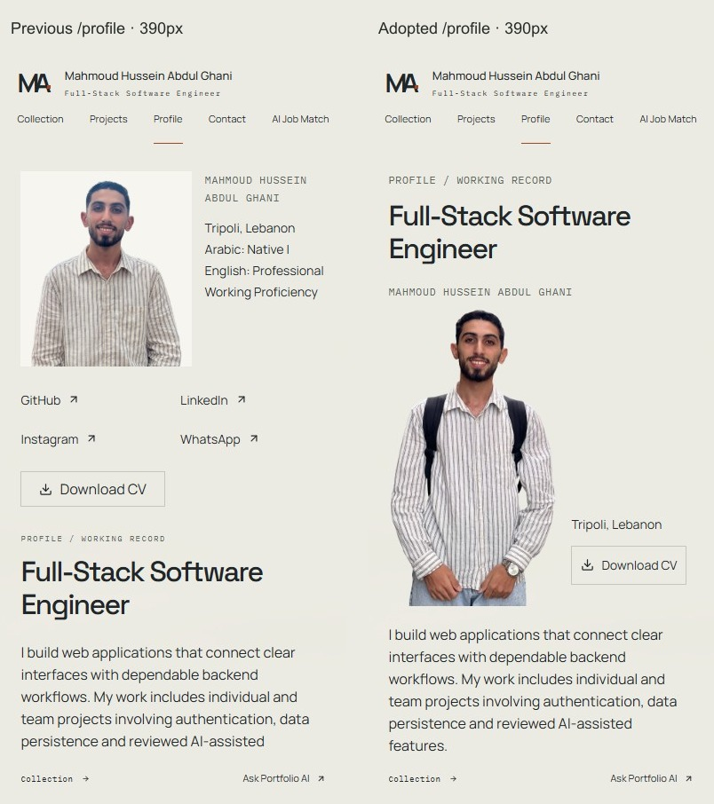
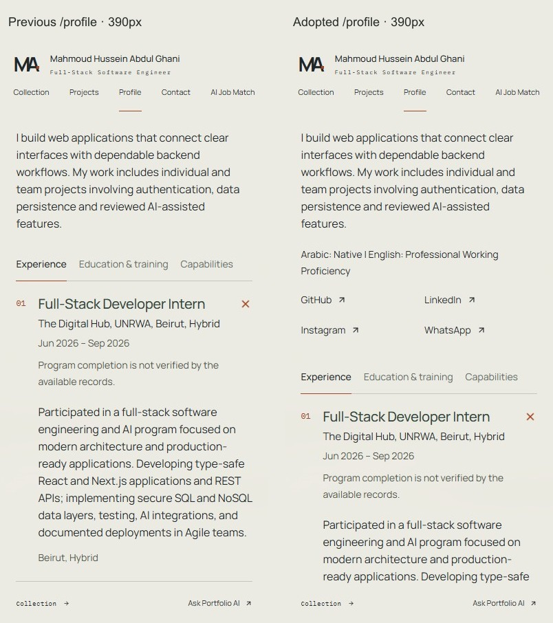
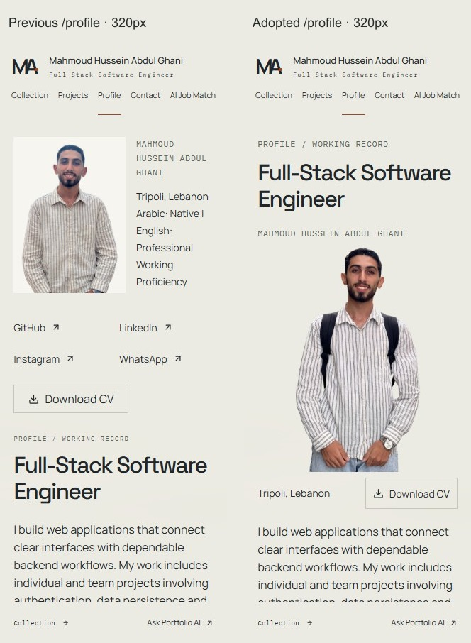
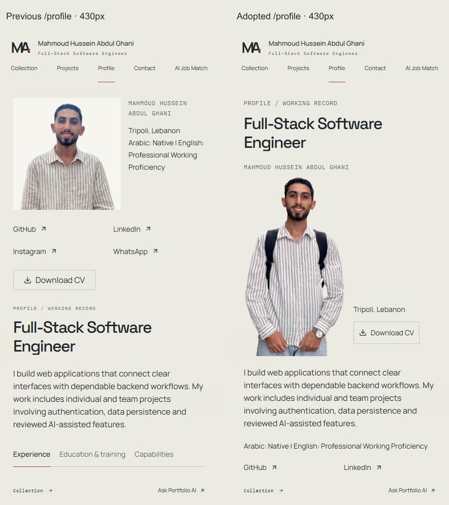
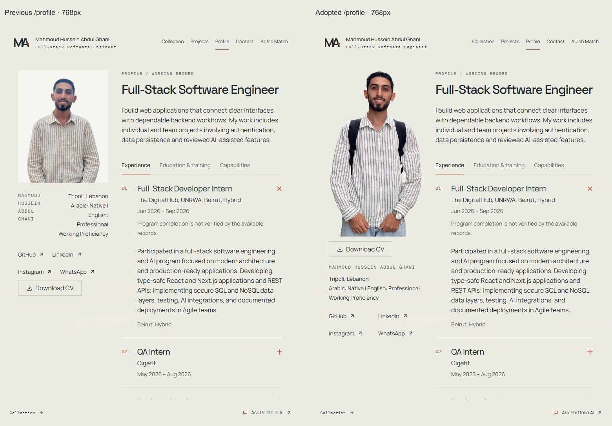
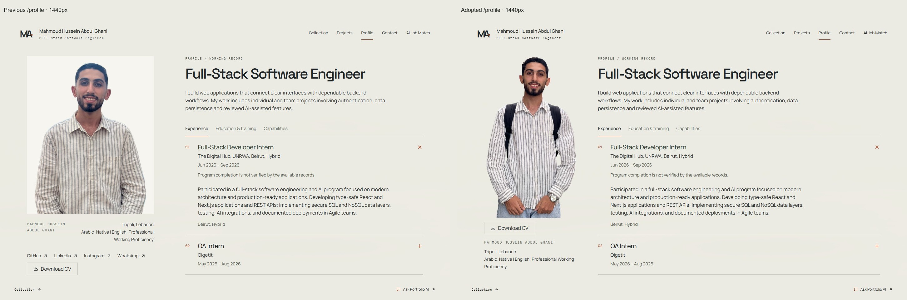

Profile portrait adoption
Left: previous normal-build /profile at PR #37. Right: the adopted normal-build /profile. The main content matches the approved PR #37 review composition, commit 5db900a204c5f475f6906bd28d05913227f8a8f5, pixel for pixel at all five widths and all provided phone scroll positions. The header now correctly marks Profile as the active navigation item.
Adopted Profile · Download comparison package
Open /profile on this adoption draft PR's Git-triggered Vercel Preview. It is a normal production build: no review flag or query parameter. Authorized Vercel sign-in may be required; deployment protection is unchanged. The production domain changes only after an authorized promotion of this adoption commit, which this task does not perform.
390px — previous / adopted Profile

390px — introduction and social links

390px — record tabs and content
320px — previous / adopted Profile

320px introduction/social transition · 320px record transition


430px — previous / adopted Profile

430px introduction/social transition · 430px record transition


768px — adopted tablet composition

1440px — adopted desktop composition

The approved PNG/WebP bytes and processing are unchanged. Complete hands, natural proportions, original likeness, restrained brightening and backpack are retained. Only one portrait loads on success; the previous portrait is requested on failure. Speaking/gesturing video remains unfinished and separate. No playback controls.
Previous normal-build measurements · Adoption measurements and approved-pixel checks · Design QA and promotion checklist · Changed files
320px loading · 320px failure fallback · 390px loading · 390px failure fallback · 430px loading · 430px failure fallback


Windows Chrome viewport/touch emulation with frozen read-only public data and the existing CV; no physical-device verification. Protected hosted content requires authorized access. This static comparison is supplied separately because normal builds exclude review routes and their comparison bundle.